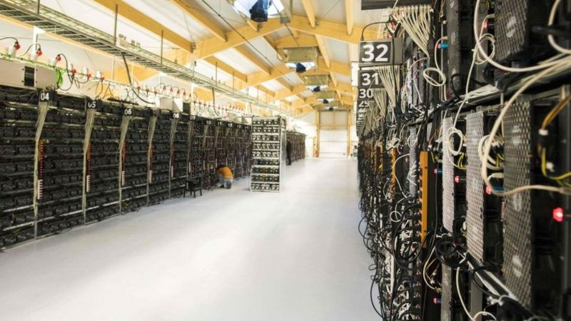

Eso ocurre porque el proceso de "minar" la criptomoneda -utilizando gigantescos servidores que no cesan de trabajar- consume mucha energía.
Según los investigadores, la minería de bitcoins utiliza cerca de 121,36 teravatios-hora (TWh)de electricidad al año, un récord que provoca un fuerte impacto en el medioambiente y supera a una larga lista de países.
El tema volvió al debate luego que Elon Musk, a través de su empresa de autos eléctricos Tesla, reportó la compra de US$1.500 millones en bitcoin, disparando el precio de la divisa y encendiendo críticas por la contaminación que genera.
Esta última subida del precio del bitcoin -que ha seguido una meteórica tendencia alcista en los últimos meses- le ha dado nuevos incentivos a los mineros de la divisa para hacer funcionar más y más ordenadores con el objetivo de generar más criptomonedas.
A medida que sube el precio del bitcoin, sube el consumo de electricidad, dice Michel Rauchs, investigador del CCAF, donde crearon una herramienta en línea que permite hacer este tipo de cálculos.
"Realmente es por su diseño que el bitcoin consume tanta electricidad", le explica Rauchs a la BBC. "Esto no es algo que cambiará en el futuro, a menos que el precio de bitcoin baje significativamente".
Los investigadores trabajan con el Índice de Consumo Eléctrico del Bitcoin de Cambridge (CBECI, por sus siglas en inglés), el cual provee estimaciones en tiempo real sobre cuánta electricidad consume la generación de la divisa.
Este índice funciona con base en un modelo que asume que las máquinas utilizadas para minar en el mundo funcionan con distintos niveles de eficiencia.
Siguiendo la relación entre un precio promedio de electricidad por kilovatio hora (US$0.05) y la demanda de energía de la red bitcoin, la herramienta estima cuánta electricidad se consume en un momento dado.
"El bitcoin es anti eficiente", dice David Gerard, autor del libro "Attack of the 50 Foot Blockchain".
"Es muy malo que toda esta energía se desperdicie literalmente en una lotería".
Las máquinas dedicadas a "minar" o extraer bitcoins, son ordenadores especializados que se conectan a la red de criptomonedas.
Su trabajo es verificar las transacciones realizadas por las personas que envían o reciben la divisa, en un proceso que implica resolver complejos acertijos matemáticos.
Los lugares donde se ha ce la minería del bitcoin consumen gigantescas cantidades de electricidad.
Como recompensa, los mineros ocasionalmente reciben pequeñas cantidades de bitcoin en lo que a menudo se compara con una lotería.
Para aumentar las ganancias, los mineros conectan una gran cantidad de computadores, con el objetivo de aumentar sus posibilidades de conseguir bitcoin.
Y como los computadores trabajan casi día y noche para completar los rompecabezas, el consumo eléctrico es muy alto.
Existe una gran diferencia entre el consumo de energía y la huella de carbono, argumenta Nic Carter, socio fundador de la firma de capital de riesgo Castle Island Ventures, especilizada en el sector de blockchains (cadenas de bloques).
"Si miramos solamente el consumo de energía no estamos contando toda la historia", le dice a BBC Mundo.

En las provincias chinas de Sichuan y Yunnan los mineros del bitcoin utilizan energía hidroeléctrica excedente.
Aunque es cierto que la mayor parte de la electricidad se produce a partir de combustibles fósiles como el carbón, el petróleo o el gas -que son altamente contaminantes- también se utilizan energías renovables (como la hidroeléctrica o la eólica) o energía nuclear.
Entonces, si bien importa el nivel de consumo de electricidad, también hay que tomar en cuenta cómo se genera aquella electricidad, apunta Carter.
Por ejemplo, señala, hay mineros en China que aprovechan la energía hidroeléctrica excedente en las represas. Si no la usaran, esa energía simplemente se perdería.
Eso explica por qué la minería del bitcoin se ha expandido tanto en las provincias de Sichuan y Yunnan.
Otro caso ocurre cuando algunos mineros capturan el metano descargado o quemado (que es un subproducto de la extracción de petróleo) y lo utilizan para generar la electricidad que requieren sus computadoras.

"Es muy malo que toda esta energía se desperdicie literalmente en una lotería", dice David Gerard.
Muchos activistas consideran que esos ejemplos son casos puntuales que no le quitan la responsabilidad ambiental a la industria del bitcoin.
De todos modos, Carter advierte que la minería del bitcoin se acabará en unos años, puesto que el sistema fue diseñado de tal manera que los acertijos matemáticos que resuelven las computadoras llegarán a su fin.
"Este proceso está completado en un 88%", apunta, lo que en la práctica significa que cada vez se hace más difícil seguir minando.
Sin embargo, en la medida que el precio siga disparándose, es probable que el consumo energético también aumente.
Recuerda que puedes recibir notificaciones de BBC Mundo. Descarga nuestra app y actívalas para no perderte nuestro mejor contenido.
Temas relacionados